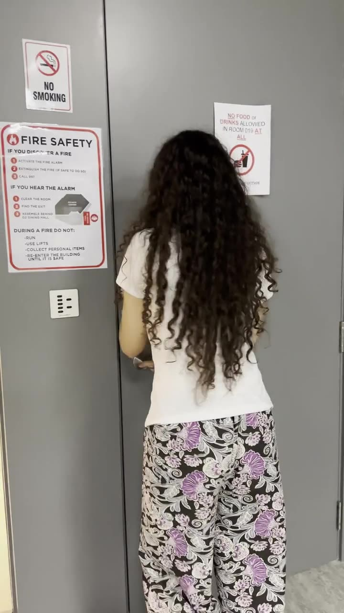

MISSING
Last seen on campus after hours

- Last seen
- Academic building, film lab corridor
- Time
- After hours — building believed empty
- Circumstances
- Stayed behind to finish a project. Building locked more than the doors.
- Runtime of last recording
- 1:31
Anyone with information is asked to review the attached recording and the evidence collected from the scene.
▶ Play the last recordingEVIDENCE PHOTOGRAPHS · CLICK TO REVIEW THE FULL CASE FILE